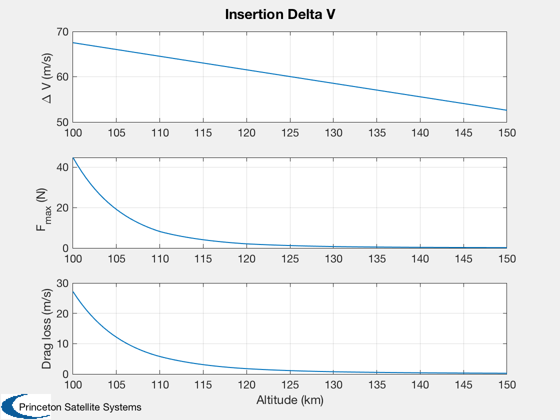

Computes the insertion delta-V for a Hohmann transfer.
For a launch one way to get to a circular orbit is to insert into the ascending leg of a Hohmann transfer and then circularize the orbit. This script assumes that the final orbit is the ISS orbit (330 km) and the booster leaves you at perigee in the Hohmann transfer ellipse. It then computes the required Delta-V as a function of perigee height.
The script also computes the Delta-V loss due to drag. The mass reduction due to fuel consumption is not considered.
------------------------------------------------------------------------ See also Plot2D, AE2VR, DVHoh, AtmDens2 ------------------------------------------------------------------------
%------------------------------------------------------------------------------- % Copyright (c) 2007 Princeton Satellite Systems, Inc. All rights reserved. %------------------------------------------------------------------------------- clear diff; % diff is often a variable, clear it for use as function rE = 6378.165; cD = 2.7; a = 1; mass = 400; h = linspace(100, 150); r1 = rE + h; r2 = rE + 330; nu = linspace(0,pi); n = length(r1); dV2 = zeros(1,n); fMax = zeros(1,n); dVDrag = zeros(1,n); for k = 1:n [dV, dV1, dV2(k), eT, aT] = DVHoh( r1(k), r2 ); [v, r, t] = AE2VR( aT, eT, nu ); rho = AtmDens2( r - rE ); f = 0.5*cD*a*rho.*(v*1000).^2; fMax(k) = f(1); dT = diff(t); fm = 0.5*(f(2:end) + f(1:(end-1))); dVDrag(k) = sum(fm.*diff(t))/mass/1000; end yL = {'\Delta V (m/s)' 'F_{max} (N)' 'Drag loss (m/s)'}; Plot2D( h, [dV2*1000;fMax;dVDrag*1000], 'Altitude (km)',yL, 'Insertion Delta V') %-------------------------------------- % PSS internal file version information %--------------------------------------